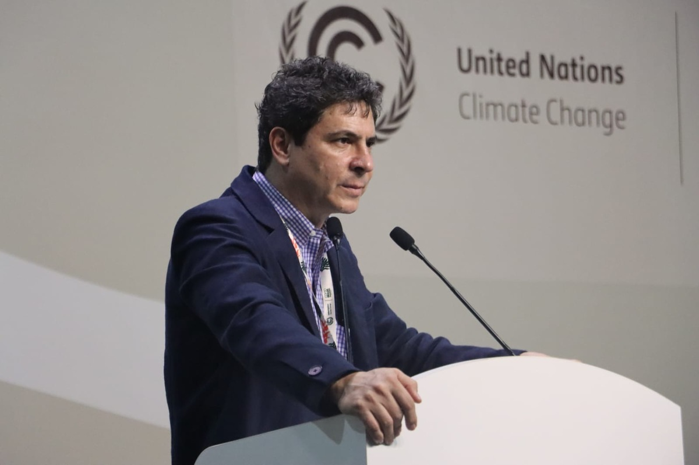
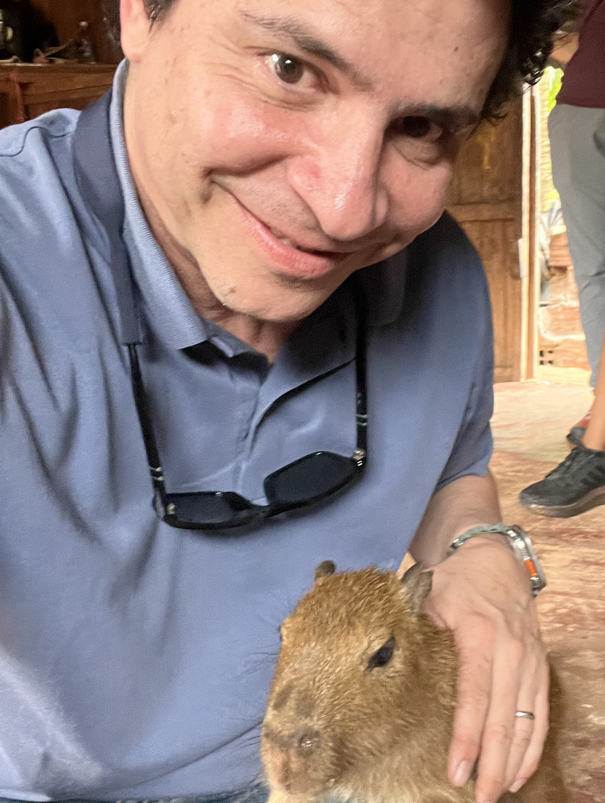

Consulting for the organizations doing the work — and the funders deciding where it goes.
Blue Planet Contact helps environmental and conservation organizations sharpen their strategy, tell their story with clarity, and secure the funding they need to protect the places and people that depend on them.
We also advise philanthropic funders committed to conservation, social justice, and ancestral knowledge — helping them identify strong partners, vet opportunities, and map the landscape so that funding under pressure to move quickly still lands where it will do the most good.
More than 20 years of nonprofit leadership, communications, and fundraising — applied on behalf of the organizations doing conservation work, and the funders who support them.
Messaging, campaign planning, and rebranding that helps your work land with your target audience, including thought pieces, white papers, and op-eds.
Engaging teams in structured processes designed to strengthen management, inclusion, governance, and programmatic impact.
Compelling, well-researched proposals grounded in a deep understanding of the funding landscape and tailored to the funder's requirements.
Organizational strategy support shaped by two decades of hands-on experience on the ground, with stakeholders, and in leadership roles across conservation and social impact.
Opportunity identification, partner vetting, due diligence, and landscape mapping that helps funders allocate resources with confidence and purpose, not just urgency.
Blue Planet Contact works with both funders and the organizations they support, which is what allows for genuine landscape-level insight. Active conflicts are disclosed and managed transparently.
On-the-ground experience across four regions and program areas. Work spans environmental protection, social advocacy, and campaigns; public-private partnerships; monitoring, evaluation & learning (MEL); fiscal compliance and institutional grant reporting (USG, EU, multilateral funders); and event and Conference of the Parties (COP) strategy and execution.
Blue Planet Contact works with US-based organizations, and with international organizations seeking US-based financing.


Kim Chaix brings more than 20 years of senior leadership at the intersection of human rights and environmental conservation across Latin America, Africa, and the US.
Kim began his career as a journalist and documentary producer for outlets including National Geographic, PBS, ABC News, and Animal Planet, before turning to conservation and philanthropy full-time.
Over the course of his career, Kim has held senior leadership roles at organizations including Rainforest Foundation US and Virunga Fund Inc., where he significantly grew philanthropic revenue and helped direct tens of millions of dollars in institutional and private funding to conservation and development programs. He also founded The Charcoal Project, a nonprofit expanding access to clean biomass energy across sub-Saharan Africa, and contributed to communications strategy and major land conservation efforts at The Nature Conservancy's New York chapter.
Kim grew up between southern France and Nicaragua and now lives in Brooklyn, NY, with his partner, their cat, and Sibo, an Australian Shepherd. Outside of work, he sails and trains for triathlons.
Prefer email? Reach us directly at hello@blueplanetcontact.org